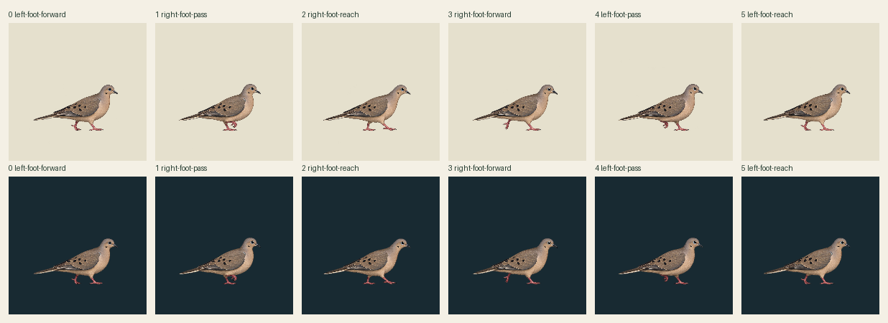

HELD for credible ground travel. Six genuine existing leg/body drawings, zero new drawings or image calls. This is walking art, not hopping. Each source canvas is192 world pixels at density1; the bird remains about114–121world pixels wide. No body bob, image fitting or toe snap.
Raw source · light
Single codec export · light
Raw source · dark
Single codec export · dark
One nonlooping22tick cycle at30Hz:4/3/4/4/3/4. It holds the last actual gait pose, with explicit replay; no safe start/stop transition is invented. The line is an image-space floor proxy, not a runtime surface or approved physical contact.
Working stance foot A is proposed across0–2 and B across2–5, with uncertain anatomical correspondence. Existing contact tracks need incompatible root speeds; exact boundary compensation would introduce a17world-pixel jump and backward root segment. Neither a fixed root nor authored travel proves planted feet. No compensating source transforms are applied.
Raw192 PNGs retain exact prior RGBA. Codec: one pooled63-color opaque palette plus transparency, alpha128, no dither, and one shared crop[28,83,154,153],126×70. Zero nonzero cleaned pixels discarded; raw/native sources intact. Proposed cropped root77,67 is the same source root105,150 minus common crop origin.
Input5/common-family packaging does not authorize activity clips; this separate walking-source proposal has no private pins, rights approval or app binding. Contacts[]/geometryReviewed=false/supportWorld=null. Independent source review pending.
